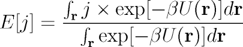
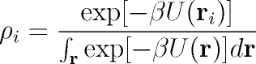
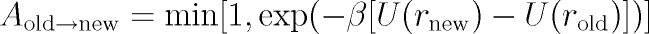
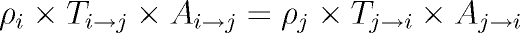
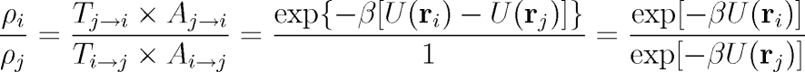
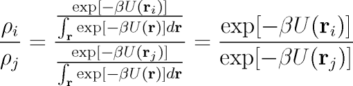

|
|
Overview
This section provides a quick overview of statistical mechanics and discusses the reasons why somebody might want to perform a Monte Carlo molecular
simulation. This was adapted from the Ph.D. thesis of Marcus Martin.
Why would you perform a Molecular Simulation?
Statistical mechanics is a theory that takes as its input the total energy of a system of molecules as a function of their positions and momenta and
yields as an output any thermodynamic property of interest. This involves an integral in which momenta (kinetic energy) and positions (potential energy)
are easily separated and the part involving the momenta can be integrated analytically. Unfortunately, except for some very trivial (and not realistic)
functional forms for the potential energy, it is not possible to analytically integrate the part involving the positions, and a numeric solution is
useless because a derivative of the original integral must be taken in order to compute most of the thermodynamic properties.
Rewriting this problem in the language of probability theory allows some (but not all) of the thermodynamic properties to be computed as the expected
value or variance of some distribution. For the canonical ensemble, where we have a constant number of molecules (N), a constant total volume
(V), and a constant temperature (T), the expected value of any observable j can be written
 Equation 1  Equation 2
Why choose Monte Carlo?
Molecular dynamics (MD) and Monte Carlo (MC) are equivalent methods, but they have different strengths and weaknesses. Molecular dynamics
follows the natural time evolution of the system and this allows the calculation of time-dependent quantities like diffusion constants and viscosities.
In MD you calculate the current forces on the system, compute the instantaneous velocities that would result from those forces, and assume that the
molecules move with that velocity for a small increment of time. This "time step" typically ranges from around 0.5 to 10 fs, and this limits MD
simulations to time scales under a microsecond. Monte Carlo does not follow the time evolution so dynamical quantities cannot be computed, but this also
means that processes which take a long physical time can be studied if the simulation is designed properly. The Monte Carlo method also
enables the use of certain ensembles specifically designed for computing phase equilibria (particularly the Gibbs ensemble) that are very difficult to
simulate using molecular dynamics.
The phrase "Monte Carlo simulation" is used in a wide variety of contexts throughout the scientific literature. The main idea of all Monte Carlo
simulations is to generate a large set of configurations and to measure the average (and sometimes variance) of some quantity of the system. These
simulations are named after the famous gambling location Monte Carlo due to the random numbers that are used in order to generate and accept or reject
trial moves. In our case, a Monte Carlo simulation is used in order to sample configurations according to a statistical mechanical ensemble.
The main algorithmic challenge of designing a Monte Carlo molecular simulation lies in devising ways to adequately and efficiently sample the equilibrium
distribution of the correct statistical mechanical ensemble. If we can devise an algorithm that samples states with the probability distribution given
in Equation 2 then we will be able to compute the canonical ensemble averages.
Metropolis et al.
were the first to show that you can sample such a distribution by treating the problem as if it were a Markov chain. A Markov chain is a collection
of states where the probability of moving from one state to another depends only upon the state that the system is currently residing in, independent
of how the system got into that current state. The trick is to select the probabilities of moving from one state to another in such a way that the
system converges to a stationary distribution with the probabilities given in Equation 2.
This is best illustrated by considering a system of monatomic molecules in a periodic box. A periodic box is one in which molecules that exit out of
one side of the box re-enter on the other side, and this is used to eliminate the effects of placing walls around the system. A Monte Carlo move is
an attempt to change the system from one state to another. In this system the only move that is required to equilibrate the system (reach the
stationary distribution) is a translational move. The algorithm for a translational move is as follows.
- 1) Select a molecule in the system at random.
- 2) Displace that molecule in a random direction by a distance Z1*M where Z1 is a random number uniformly
distributed over the interval (0,1), and M is the maximum displacement.
- 3) Compute the potential energy change [U(rnew) - U(rold)] caused by moving this particle from its old location
to the new location.
- 4) Accept or reject the move according to the acceptance probability
 Equation 3  Equation 4  Equation 5  Equation 6
The next step
In theory, the Metropolis translation move is sufficient to sample the canonical ensemble. In practice, many other different kinds of moves are
also utilized in order to reduce the amount of computer time required to get good convergence to the stationary distribution, and also to sample
ensembles other than canonical. The broadly stated goal of Monte Carlo algorithm development is to achieve the best statistical precision using the
least amount of computer time. Biased Monte Carlo methods is an active area of research and the
Configurational-bias Monte Carlo page explains how these methods enable efficient simulation of molecules with complex
architectures (long, branched and cyclic molecules) by utilizing an asymmetric underlying Markov chain transition matrix that makes it more
likely to attempt to move to a molecular conformation with a lower energy than to attempt to move to one with a higher energy.
While algorithm power controls the precision of the simulation, the intermolecular potential functions (also known as force fields) control the
accuracy of a simulation that is attempting to reproduce the behavior of real molecules. More information about the force fields implemented into
Towhee is found on the Towhee Capabilities page
Return to the Towhee algorithm page
|